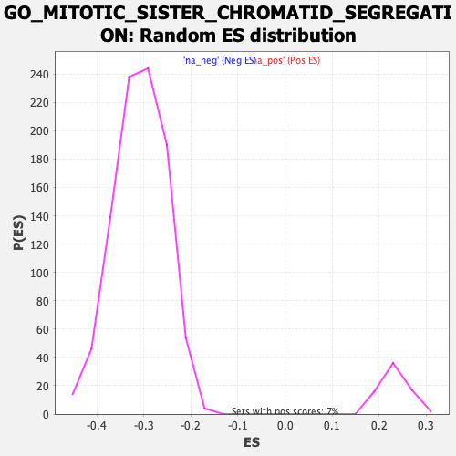

| | | Dataset | DE_genes2 |
| Phenotype | NoPhenotypeAvailable |
| Upregulated in class | na_neg |
| GeneSet | GO_MITOTIC_SISTER_CHROMATID_SEGREGATION |
| Enrichment Score (ES) | -0.67047083 |
| Normalized Enrichment Score (NES) | -2.170259 |
| Nominal p-value | 0.0 |
| FDR q-value | 0.0 |
| FWER p-Value | 0.0 |
Table: GSEA Results Summary
 Fig 1: Enrichment plot: GO_MITOTIC_SISTER_CHROMATID_SEGREGATION
Fig 1: Enrichment plot: GO_MITOTIC_SISTER_CHROMATID_SEGREGATION
Profile of the Running ES Score & Positions of GeneSet Members on the Rank Ordered List
| PROBE | GENE SYMBOL | GENE_TITLE | RANK IN GENE LIST | RANK METRIC SCORE | RUNNING ES | CORE ENRICHMENT | | 1 | LCMT1 | | | 10 | 11.072 | 0.0211 | No |
| 2 | CHMP4B | | | 569 | 3.511 | -0.0061 | No |
| 3 | CHMP1A | | | 654 | 3.296 | -0.0048 | No |
| 4 | CHTF8 | | | 727 | 3.153 | -0.0030 | No |
| 5 | MAD1L1 | | | 922 | 2.842 | -0.0092 | No |
| 6 | TUBG2 | | | 1106 | 2.598 | -0.0153 | No |
| 7 | BECN1 | | | 1180 | 2.496 | -0.0149 | No |
| 8 | KLHL22 | | | 1357 | 2.307 | -0.0211 | No |
| 9 | DIS3L2 | | | 1472 | 2.205 | -0.0237 | No |
| 10 | PPP2R1A | | | 1600 | 2.090 | -0.0274 | No |
| 11 | RAB11A | | | 1794 | 1.923 | -0.0354 | No |
| 12 | PHF23 | | | 1909 | 1.832 | -0.0388 | No |
| 13 | CHMP6 | | | 1910 | 1.829 | -0.0352 | No |
| 14 | KATNB1 | | | 2191 | 1.627 | -0.0491 | No |
| 15 | ANKRD53 | | | 2269 | 1.580 | -0.0507 | No |
| 16 | NUMA1 | | | 2493 | 1.446 | -0.0614 | No |
| 17 | AKAP8L | | | 2675 | 1.352 | -0.0698 | No |
| 18 | MAU2 | | | 2690 | 1.342 | -0.0681 | No |
| 19 | PHF13 | | | 3322 | 1.068 | -0.1045 | No |
| 20 | CHMP2A | | | 3341 | 1.061 | -0.1035 | No |
| 21 | AURKC | | | 5270 | 0.499 | -0.2201 | No |
| 22 | POGZ | | | 5425 | 0.465 | -0.2286 | No |
| 23 | CHMP4C | | | 5432 | 0.464 | -0.2281 | No |
| 24 | ANAPC15 | | | 6393 | 0.265 | -0.2861 | No |
| 25 | VPS4A | | | 6963 | 0.161 | -0.3205 | No |
| 26 | CHMP7 | | | 7021 | 0.151 | -0.3237 | No |
| 27 | NCAPH2 | | | 7491 | 0.067 | -0.3522 | No |
| 28 | MAD2L2 | | | 7828 | 0.012 | -0.3727 | No |
| 29 | CHMP1B | | | 7855 | 0.010 | -0.3742 | No |
| 30 | TUBG1 | | | 7955 | -0.003 | -0.3803 | No |
| 31 | ANAPC5 | | | 8465 | -0.087 | -0.4112 | No |
| 32 | PSMG2 | | | 8766 | -0.147 | -0.4292 | No |
| 33 | ZNF207 | | | 8957 | -0.183 | -0.4404 | No |
| 34 | CHMP5 | | | 9296 | -0.265 | -0.4605 | No |
| 35 | HECW2 | | | 9745 | -0.384 | -0.4871 | No |
| 36 | NUP62 | | | 9747 | -0.384 | -0.4864 | No |
| 37 | NAA10 | | | 10004 | -0.462 | -0.5011 | No |
| 38 | MAP10 | | | 10009 | -0.463 | -0.5004 | No |
| 39 | TNKS | | | 10513 | -0.630 | -0.5299 | No |
| 40 | VPS4B | | | 10518 | -0.632 | -0.5289 | No |
| 41 | NSMCE2 | | | 10641 | -0.675 | -0.5350 | No |
| 42 | NEK6 | | | 10708 | -0.693 | -0.5377 | No |
| 43 | CDC23 | | | 11236 | -0.896 | -0.5681 | No |
| 44 | PTTG3P | | | 11552 | -1.029 | -0.5853 | No |
| 45 | ANAPC11 | | | 11722 | -1.095 | -0.5935 | No |
| 46 | HIRA | | | 11750 | -1.109 | -0.5929 | No |
| 47 | TTN | | | 11813 | -1.138 | -0.5945 | No |
| 48 | PINX1 | | | 11950 | -1.196 | -0.6004 | No |
| 49 | DYNC1LI1 | | | 11956 | -1.198 | -0.5984 | No |
| 50 | XRCC3 | | | 12710 | -1.592 | -0.6412 | No |
| 51 | DUSP1 | | | 12720 | -1.599 | -0.6386 | No |
| 52 | CDC26 | | | 12894 | -1.710 | -0.6458 | No |
| 53 | RAN | | | 12950 | -1.743 | -0.6458 | No |
| 54 | KIF22 | | | 13043 | -1.792 | -0.6479 | No |
| 55 | NSL1 | | | 13055 | -1.802 | -0.6450 | No |
| 56 | BOD1 | | | 13214 | -1.899 | -0.6509 | No |
| 57 | SMC1A | | | 13325 | -1.971 | -0.6538 | No |
| 58 | CHMP4A | | | 13336 | -1.978 | -0.6505 | No |
| 59 | CDT1 | | | 13400 | -2.026 | -0.6504 | No |
| 60 | IK | | | 13724 | -2.259 | -0.6657 | No |
| 61 | NCAPD2 | | | 13788 | -2.321 | -0.6650 | No |
| 62 | AKAP8 | | | 13879 | -2.396 | -0.6658 | Yes |
| 63 | DSN1 | | | 13907 | -2.424 | -0.6627 | Yes |
| 64 | INCENP | | | 13962 | -2.468 | -0.6611 | Yes |
| 65 | KPNB1 | | | 13985 | -2.485 | -0.6576 | Yes |
| 66 | CHMP2B | | | 13987 | -2.487 | -0.6528 | Yes |
| 67 | CDK5RAP2 | | | 14033 | -2.527 | -0.6506 | Yes |
| 68 | NEK2 | | | 14051 | -2.552 | -0.6466 | Yes |
| 69 | NCAPD3 | | | 14122 | -2.615 | -0.6458 | Yes |
| 70 | KNSTRN | | | 14258 | -2.748 | -0.6486 | Yes |
| 71 | ESPL1 | | | 14262 | -2.749 | -0.6434 | Yes |
| 72 | RRS1 | | | 14305 | -2.785 | -0.6405 | Yes |
| 73 | PCID2 | | | 14369 | -2.855 | -0.6388 | Yes |
| 74 | PTTG1 | | | 14464 | -2.952 | -0.6387 | Yes |
| 75 | BUB3 | | | 14549 | -3.043 | -0.6379 | Yes |
| 76 | CDC27 | | | 14637 | -3.170 | -0.6370 | Yes |
| 77 | MIS12 | | | 14669 | -3.210 | -0.6326 | Yes |
| 78 | ZW10 | | | 14679 | -3.216 | -0.6269 | Yes |
| 79 | RACGAP1 | | | 14957 | -3.580 | -0.6367 | Yes |
| 80 | TACC3 | | | 15038 | -3.698 | -0.6344 | Yes |
| 81 | HNRNPU | | | 15058 | -3.735 | -0.6282 | Yes |
| 82 | KIF4B | | | 15081 | -3.764 | -0.6222 | Yes |
| 83 | ZWINT | | | 15107 | -3.798 | -0.6163 | Yes |
| 84 | NIPBL | | | 15209 | -3.928 | -0.6147 | Yes |
| 85 | ANAPC1 | | | 15217 | -3.941 | -0.6074 | Yes |
| 86 | ATM | | | 15219 | -3.945 | -0.5998 | Yes |
| 87 | CDCA8 | | | 15225 | -3.955 | -0.5923 | Yes |
| 88 | SEH1L | | | 15275 | -4.073 | -0.5873 | Yes |
| 89 | MSTO1 | | | 15301 | -4.116 | -0.5808 | Yes |
| 90 | CHAMP1 | | | 15322 | -4.154 | -0.5739 | Yes |
| 91 | SPAG5 | | | 15339 | -4.181 | -0.5667 | Yes |
| 92 | CDCA5 | | | 15393 | -4.273 | -0.5615 | Yes |
| 93 | CDC20 | | | 15404 | -4.309 | -0.5537 | Yes |
| 94 | CUL3 | | | 15431 | -4.357 | -0.5468 | Yes |
| 95 | RIOK2 | | | 15454 | -4.393 | -0.5395 | Yes |
| 96 | GEN1 | | | 15480 | -4.447 | -0.5323 | Yes |
| 97 | INO80 | | | 15484 | -4.450 | -0.5238 | Yes |
| 98 | PIBF1 | | | 15494 | -4.463 | -0.5156 | Yes |
| 99 | TRIP13 | | | 15527 | -4.544 | -0.5086 | Yes |
| 100 | ATRX | | | 15599 | -4.719 | -0.5037 | Yes |
| 101 | PLK1 | | | 15623 | -4.763 | -0.4958 | Yes |
| 102 | CCNB1 | | | 15643 | -4.796 | -0.4876 | Yes |
| 103 | KIFC1 | | | 15645 | -4.799 | -0.4782 | Yes |
| 104 | CENPC | | | 15651 | -4.807 | -0.4691 | Yes |
| 105 | PDS5B | | | 15754 | -5.018 | -0.4655 | Yes |
| 106 | RB1 | | | 15805 | -5.145 | -0.4585 | Yes |
| 107 | NCAPH | | | 15843 | -5.247 | -0.4505 | Yes |
| 108 | PDS5A | | | 15889 | -5.372 | -0.4427 | Yes |
| 109 | APC | | | 15912 | -5.426 | -0.4334 | Yes |
| 110 | RAD21 | | | 15930 | -5.459 | -0.4237 | Yes |
| 111 | NAA50 | | | 15974 | -5.568 | -0.4154 | Yes |
| 112 | TPR | | | 16001 | -5.664 | -0.4059 | Yes |
| 113 | PSRC1 | | | 16011 | -5.700 | -0.3953 | Yes |
| 114 | SMC5 | | | 16016 | -5.725 | -0.3843 | Yes |
| 115 | MAD2L1 | | | 16043 | -5.805 | -0.3746 | Yes |
| 116 | KIF2C | | | 16061 | -5.848 | -0.3641 | Yes |
| 117 | KIF18B | | | 16087 | -5.923 | -0.3541 | Yes |
| 118 | PRC1 | | | 16103 | -5.960 | -0.3433 | Yes |
| 119 | AURKB | | | 16120 | -6.007 | -0.3325 | Yes |
| 120 | BUB1 | | | 16142 | -6.084 | -0.3219 | Yes |
| 121 | FBXO5 | | | 16169 | -6.210 | -0.3113 | Yes |
| 122 | KIF4A | | | 16226 | -6.459 | -0.3021 | Yes |
| 123 | SPDL1 | | | 16232 | -6.486 | -0.2897 | Yes |
| 124 | ANAPC4 | | | 16245 | -6.526 | -0.2776 | Yes |
| 125 | BUB1B | | | 16335 | -7.102 | -0.2691 | Yes |
| 126 | KIF23 | | | 16347 | -7.203 | -0.2557 | Yes |
| 127 | DSCC1 | | | 16359 | -7.253 | -0.2422 | Yes |
| 128 | NUSAP1 | | | 16374 | -7.420 | -0.2285 | Yes |
| 129 | CDC6 | | | 16375 | -7.439 | -0.2139 | Yes |
| 130 | NUF2 | | | 16382 | -7.475 | -0.1996 | Yes |
| 131 | SMC4 | | | 16421 | -7.981 | -0.1863 | Yes |
| 132 | TTK | | | 16444 | -8.189 | -0.1716 | Yes |
| 133 | SMC2 | | | 16464 | -8.568 | -0.1560 | Yes |
| 134 | DLGAP5 | | | 16482 | -9.145 | -0.1391 | Yes |
| 135 | CENPK | | | 16485 | -9.298 | -0.1210 | Yes |
| 136 | KIF18A | | | 16499 | -9.952 | -0.1023 | Yes |
| 137 | CENPE | | | 16501 | -10.010 | -0.0828 | Yes |
| 138 | KIF14 | | | 16503 | -10.060 | -0.0631 | Yes |
| 139 | NCAPG | | | 16504 | -10.079 | -0.0434 | Yes |
| 140 | CENPF | | | 16507 | -10.688 | -0.0226 | Yes |
| 141 | NDC80 | | | 16527 | -12.233 | 0.0002 | Yes |
Table: GSEA details [plain text format]

Fig 2: GO_MITOTIC_SISTER_CHROMATID_SEGREGATION: Random ES distribution
Gene set null distribution of ES for GO_MITOTIC_SISTER_CHROMATID_SEGREGATION